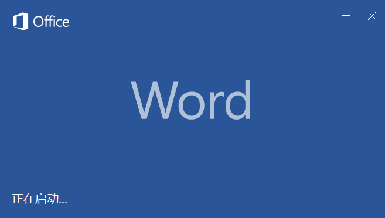

Office2016
- 
- Microsoft Office Word是微软公司的一个文字处理器应用程序
- 它最初是由Richard Brodie为了运行DOS的IBM计算机而在1983年编写的。
- 随后的版本可运行于Apple Macintosh (1984年)、SCO UNIX和Microsoft Windows (1989年)，并成为了Microsoft Office的一部分。
- Word给用户提供了用于创建专业而优雅的文档工具，帮助用户节省时间，并得到优雅美观的结果。
- Microsoft Excel是Microsoft为使用Windows和Apple Macintosh操作系统的电脑编写的一款电子表格软件。
- 直观的界面、出色的计算功能和图表工具，再加上成功的市场营销，使Excel成为最流行的个人计算机数据处理软件。
- 在1993年，作为Microsoft Office的组件发布了5.0版之后，
- Excel就开始成为所适用操作平台上的电子制表软件的霸主。
- Photoshop一款好到违反广告法的超S级设计神器！给画面来点动感吧。
- Photoshop处理以像素构成的图像，可以有效地进行图片编辑调整工作。
- Photoshop有很多功能，在图像、图形、文字、出版等各方面都有涉及。
- 在制作建筑效果图包括许三维场景时，常常需要在Photoshop进行调整。
- Microsoft OneNote，是一套用于自由形式的信息获取以及多用户协作工具
- OneNote最常用于笔记本电脑或台式电脑
- 但这套软件更适合用于支持手写笔操作的平板电脑
- 在这类设备上可使用触笔、声音或视频创建笔记